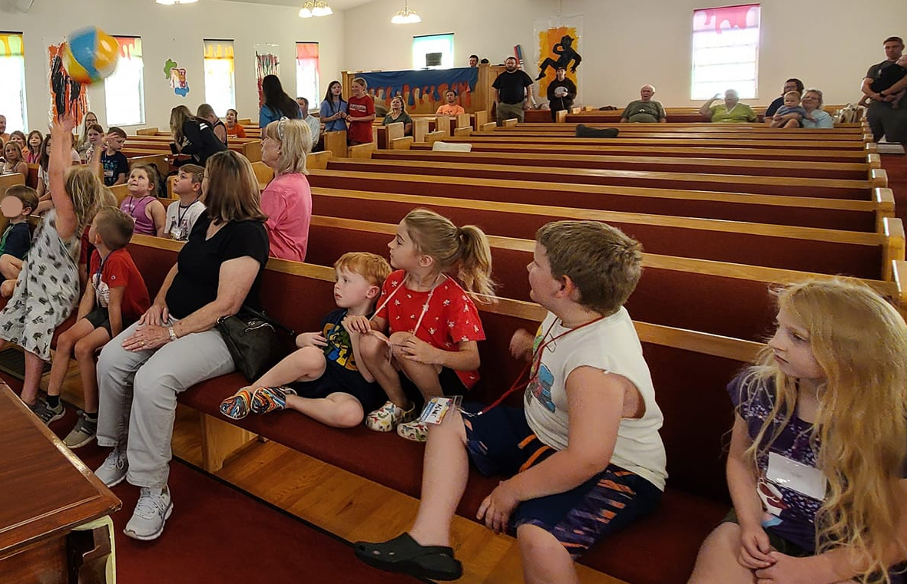

Youth Ministries
Our Youth Ministries provide a vibrant and supportive environment where young minds can grow in their relationship with God. Through engaging activities, inspiring worship, and meaningful lessons, we empower our youth to navigate life's challenges with unwavering faith...
Men and Women's Ministries
Our Men & Women's Ministries are pillars of fellowship, offering a place where individuals of all ages and backgrounds come together to share in their spiritual journeys. Through regular gatherings, enriching Bible studies, and compassionate support, we foster a welcoming community where faith is strengthened...